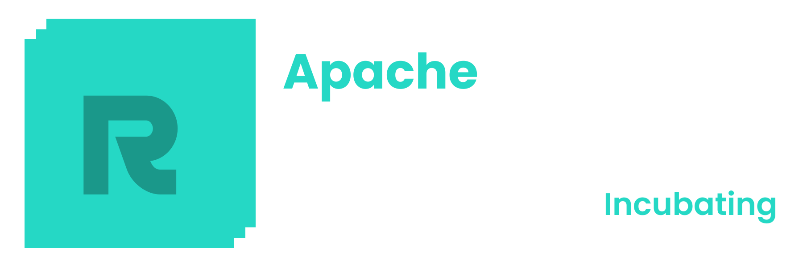

Home


Welcome to the ResilientDB Quickstart Guide—your one-stop shop for all ResilientDB projects and how to get started with them. This documentation provides comprehensive guides to install, use, and contribute to the ResilientDB ecosystem.


üöÄ What is ResilientDB?¶
ResilientDB is a high-performance, scalable, and secure blockchain platform designed to meet the demands of modern distributed applications. It offers a suite of tools and projects that enable developers and organizations to build robust blockchain solutions efficiently.
üìñ Get Started¶
- Installation Guide: Learn how to install all ResilientDB projects using the
INSTALL.shscript. - Usage Guides: Explore detailed guides on how to use each ResilientDB project.
- API Reference: Discover the API endpoints provided by the Smart-Contracts GraphQL server.
- About Us: Learn more about the ResilientDB project and the team behind it.
üåê Main Repositories¶
Access the main repositories within the ResilientDB Ecosystem and ResilientApps collections:
- Apache ResilientDB GitHub
- ResilientApp GitHub
- ResilientEcosystem GitHub
- ResVault
- ResilientDB GraphQL
- ResilientDB Python SDK
- ResCLI
- ResilientDB Explorer
üåé ResilientDB Ecosystem¶
Explore the core components and tools designed to interact with and extend the functionality of the ResilientDB platform.
- Create Resilient App: CLI tool to bootstrap ResilientDB-based applications.
- ResDB ORM: An Object-Relational Mapping tool for ResilientDB.
- ResVault SDK: SDK for secure key management with ResVault.
- Resilient Node Cache: A caching solution for ResilientDB nodes.
- ResContract: CLI for managing and deploying contracts on ResilientDB.
- Smart-Contracts GraphQL: A GraphQL server for interacting with smart contracts.
- Rust SDK: SDK for Rust applications interacting with ResilientDB.
- TypeScript SDK: SDK for TypeScript-based ResilientDB projects.
- Ag-GraphQL: GraphQL API for Ag applications on ResilientDB.
- Dashboard: Dashboard for monitoring ResilientDB nodes.
- Website: Source code for the ResilientDB website.
- ResilientDB Quickstart: A quickstart repository for getting started with the ResilientDB ecosystem.
üì± ResilientApps¶
This list includes various applications and tools built on top of the ResilientDB platform, enhancing its use cases and usability.
- Demo ResilientApp: Demo showcasing ResilientDB's capabilities.
- Debitable: Decentralized debit system.
- Arrayan: Data analysis tool within the ResilientDB ecosystem.
- ResView: Visualization tool for ResilientDB transactions.
- ResChat: Decentralized messaging application.
- ResCLI: CLI tool for managing interactions with ResilientDB.
- CrypGo: Cryptocurrency tracking app.
- ResDrive: Decentralized file storage solution.
- ResLenses: Data analytics tool for the ResilientDB ecosystem.
- ReLenses Backend: Backend services for ReLenses application.
- ResUI: UI components for ResilientDB applications.
- Res-a-Me: Authentication service for ResilientDB.
- Echo: ResilientDB echo service for testing.
- ResCounty: Data management tool for government entities.
- ResChain Analyzer: Blockchain analysis tool.
- Desktop Wallet: Desktop wallet application for ResilientDB assets.
- VoteChain: Decentralized voting application.
- DraftRes: Draft management tool for ResilientDB.
- NexVault: Enhanced vault solution.
- ResilientNFT: NFT platform on ResilientDB.
üí° Why Choose ResilientDB?¶
- High Performance: Achieve high transaction throughput with low latency.
- Scalability: Designed to scale horizontally to meet growing demands.
- Security: Built with robust security features to protect your data.
- Flexibility: Modular architecture allows customization to fit your needs.
üìû Get Involved¶
- GitHub: ResilientEcosystem
- Support: If you have any questions or need help, feel free to open an issue.